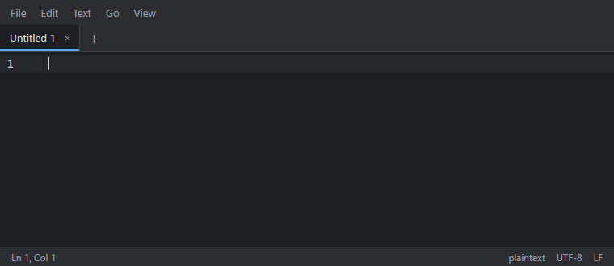
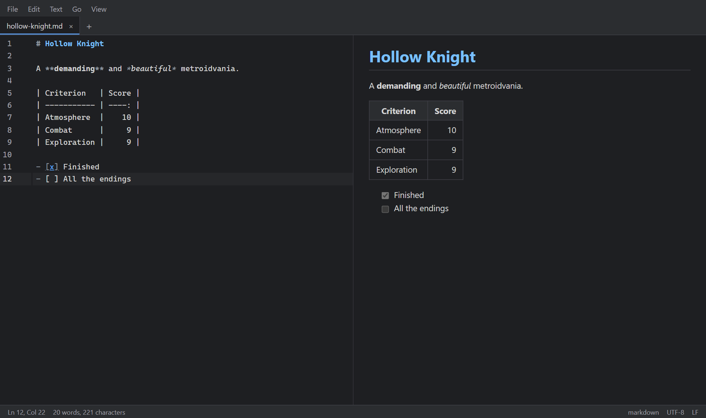
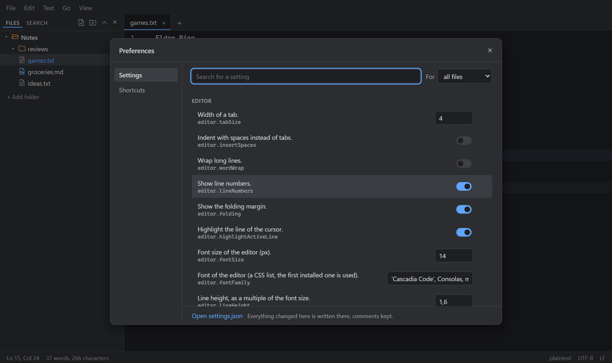

01Cascades
Un éditeur de texte léger pour prendre des notes, qui ouvre aussi n'importe quel fichier texte ou code. La simplicité de Notepad++, la personnalisation de Vim. A light text editor for taking notes that still opens any text or code file. The simplicity of Notepad++, the customization of Vim.
- Type
- App desktop, Windows · macOS · LinuxDesktop app, Windows · macOS · Linux
- Stack
- Tauri 2, Rust, Svelte 5, TypeScript, CodeMirror 6
- StatutStatus
- Version 1.0, open source (MIT)Version 1.0, open source (MIT)
- LiensLinks
- Site · GitHub · TéléchargerDownload

L'idéeThe idea
J'écris mes notes ligne par ligne, et j'indente une ligne quand elle découle de celle du dessus. Aucun éditeur ne montrait ce lien. Cascades le dessine.
I write notes line by line, and indent a line when it follows from the one above. No editor showed that link. Cascades draws it.

Le fichier ne contient que des tabulations : les traits sont tracés à l'affichage, jamais écrits. Copier le texte copie les tabulations, et le fichier reste lisible partout. Chaque ligne parent se replie, la branche courante est surlignée, et il y a huit styles de traits.
The file only holds tabs: the lines are drawn on screen, never written. Copying text copies the tabs, and the file stays readable anywhere. Every parent line folds, the current branch is highlighted, and there are eight line styles.
Ce qu'il faitWhat it does
- Onglets, jusqu'à quatre vues côte à côte, et une session restaurée au démarrage, onglets non enregistrés compris.
- Listes intelligentes, paires de parenthèses, tableaux Markdown alignés au Tab, correcteur orthographique.
- Aperçu Markdown, HTML, CSV et JSON à côté de l'éditeur. Images et PDF dans un onglet.
- Recherche et remplacement dans tout un dossier, encodages et fins de ligne conservés.
- Sept thèmes, une touche leader, une palette de commandes, des raccourcis modifiables.
- Tabs, up to four side-by-side views, and a session restored on start, unsaved tabs included.
- Smart lists, auto pairs, Markdown tables aligned with Tab, spell checking.
- Markdown, HTML, CSV and JSON preview next to the editor. Images and PDFs in a tab.
- Search and replace across a folder, encodings and line endings kept on save.
- Seven themes, a leader key, a command palette, remappable shortcuts.


Choix techniquesTechnical choices
Tout est une extension. Chaque fonctionnalité s'active avec activate(ctx) et ne peut importer que src/api, une règle de lint l'impose. Les fonctions de base passent donc par la même API que les plugins, qui est testée en permanence. Un fichier init.js reçoit le même objet ctx.
Everything is an extension. Every feature is activated with activate(ctx) and may only import src/api, enforced by a lint rule. Built-in features go through the same API as plugins, so that API is tested all the time. An init.js file gets the same ctx object.
// init.js, loaded on start like any extension
export default function (ctx) {
ctx.commands.register('user.hello', () => ctx.dialogs.alert('Hello'));
ctx.keybindings.register({ key: 'Leader H', command: 'user.hello' });
}Tauri plutôt qu'Electron. Le backend Rust gère les fichiers, les encodages, la recherche et le correcteur. Résultat : un installeur de 2,8 Mo, 6 Mo installé, une interface prête en 120 ms environ. Le PDF, le rendu Markdown et les langages ne se chargent qu'au premier usage.
Tauri over Electron. The Rust backend handles files, encodings, search and spell checking. The result: a 2.8 MB installer, 6 MB installed, an interface ready in about 120 ms. PDF, Markdown rendering and languages load on first use only.
Mises à jour intégrées. L'app propose chaque nouvelle version au démarrage et l'installe elle-même, avec des mises à jour signées.
Built-in updates. The app offers each new version at start and installs it itself, with signed updates.
LimitesLimits
Les installeurs ne sont pas encore signés avec un certificat payant : Windows et macOS affichent un avertissement à la première installation.
The installers are not signed with a paid certificate yet: Windows and macOS show a warning on first install.